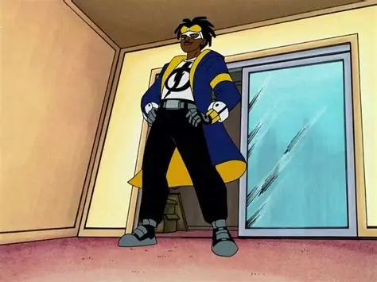

A Criação do Codinome e Uniforme
Com o auxílio técnico de Richie, Virgil confeccionou um traje com camadas isolantes de borracha e tecido reforçado para canalizar as cargas pelas mãos sem danificar roupas civis.

Identidade secreta e adaptação de equipamentos urbanos
Com o auxílio técnico de Richie, Virgil confeccionou um traje com camadas isolantes de borracha e tecido reforçado para canalizar as cargas pelas mãos sem danificar roupas civis.
